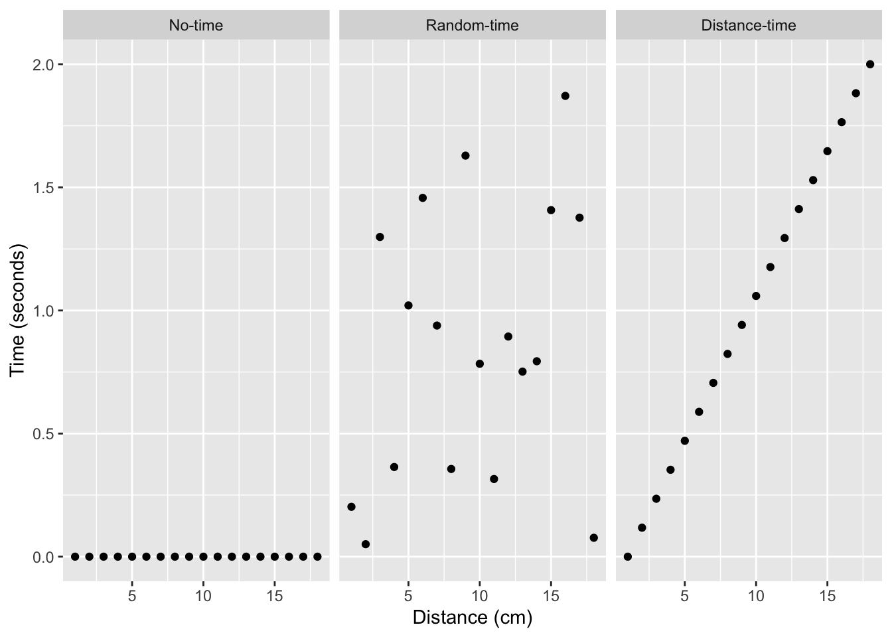
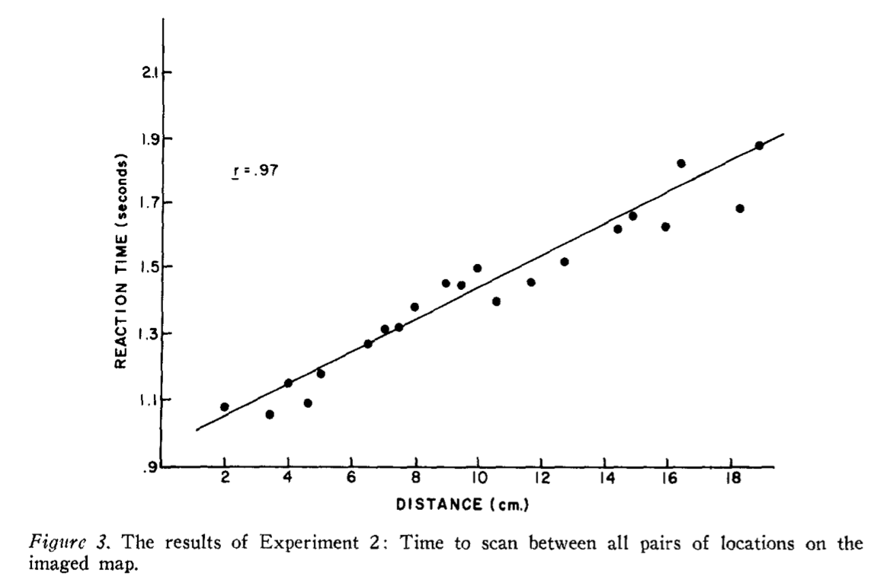

2 Mental Imagery
2.1 What is mental imagery?
Mental imagery is about the subjective experience of being in your own mind, especially while you are in the process of using your imagination. What can you see in your “mind’s eye” when you use your imagination? Can you visualize a picture, scene, or movie in your mind? If so, how would you describe the quality of the mental image? Is it vivid and life-like? If not, how would you describe your experience of using your imagination?
When I close my eyes I have some limited visualization ability. I can imagine visual scenes, especially familiar places like my kitchen. My imagery seems to be more spatial than visual. I can feel the layout of the scene more easily than seeing visual features of the mental picture. Occasionally my mental imagery is vivid and life-like, especially in dreams that can appear just as visually compelling as real life. So, according to me, my mental imagery ranges from fairly fuzzy to occasionally extremely vivid and life-like.
The next section reviews evidence that people report a wide range of mental imagery abilities. For example, some people report the ability to effortlessly visualize extremely clear and vivid life-like images. Some people report medium visualizing ability; and, other people report having very little to no mental imagery.
2.2 Generating facts about mental imagery
Answering questions about mental imagery requires establishing facts about the phenomena that we can trust and collectively agree upon. However, the subjective aspects of mental imagery present difficulties for objectively measurement. Nevertheless, the literature contains methods and findings relevant to mental imagery phenomena, and because of the subjective nature of the topic some skepticism is required for evaluating the results of the research. We begin with the method of introspection.
2.2.1 Methods of Introspection and Subjective report
The method of introspection involves self-reflecting upon or scrutinizing aspects of your own cognition. For example, I used introspection to think about my own mental imagery experience in the previous section. Similarly, I used the method of subjective report to describe my experiences using a short paragraph. As a historical sidenote, introspection was used as a technique to generate knowledge about the mind by early German psychologist Wilhem Wundt (1832-1920) and American psychologist Edward Titchener (1867-1927) who developed the structuralism school of psychology. Methods of subjective report remain very common today, often in the form of questionnaires that ask people to make various subjective judgments. Before considering the limitations of introspection and subjective report, let’s see a concrete example from the beginning of mental imagery research.
2.2.2 Galton’s Statistics of mental imagery

Sir Francis Galton (1822-1911) was a British psychologist who was one of the first to systematically study mental imagery. To quote from his 1880 paper titled, Statistics of mental imagery (Galton, 1880), Galton set out to:
“define the different degrees of vividness with which different persons have the faculty of recalling familiar scenes under the form of mental pictures, and the peculiarities of the mental visions of different persons” .
The next section reviews Galton’s methods and major findings. His original manuscript is freely available from archive.org.
2.2.2.1 Galton’s Method of Subjective Report
Galton devised the “Breakfast table task” involving a series of structured questions about mental imagery, and sent letters to 100 people asking them to reply with answers to his questions. The questions are reprinted below:
2.2.2.2 Galton’s results
Here are some of the answers from “100 men, at least half of whom are distinguished in science or in other fields of intellectual work.” (reprinted from his original manuscript):
2.2.2.3 Galton’s conclusion
Galton’s major conclusion and potential discovery was evidence for a wide variety of individual differences in mental imagery. Some people reported having very strong powers of mental visualization, some people reported having medium abilities, and other people reported having no abilities to visualize anything in their mind’s eye at all.
If Galton’s results provide facts that we can trust, then the task of explaining mental imagery just got a little bit harder. For example, in addition to explaining how people mentally image things, we also need to explain how some people can do it very well and others can’t do it at all. This is a good example of the increasing complexity that comes along with the research cycle: asking questions uncovers more facts that raise new questions requiring additional explanation.
2.2.2.4 Limitations with Galton’s method
Galton’s methods were straightforward. He wanted to know how different people experienced mental imagery, so he asked them to think about it and tell him. Although introspection and subjective report were good starting points they also have shortcomings that could invalidate the results. Consider the following limitations. Galton’s participants could have lied about their mental imagery. Their statements could reflect fictional stories rather than facts about mental imagery abilities. The participants may have inaccurately described their own experiences. For example, descriptions could be exaggerated or contain mistaken impressions. People may use different words that suggest larger differences in mental imagery than actually exist.
Establishing facts about mental imagery is difficult because a person’s subjective experience of their own mental imagery is not directly observable by other people. In other domains of inquiry, direct observation can help people quickly establish a set of agreed upon facts. For example, a group of geologists can all look and point at a rock formation, and agree that the rock formation is there, and then proceed to further inspect and measure the rock formation to gather more directly observable facts about it. Galton’s method of subjective report does have some directly observable measurements, such as the words that people used to describe their mental imagery; but, people’s verbal statements are an indirect attempt to communicate an experience, and do not provide an objective lens for other observers to directly view the experience itself.
Obtaining objective facts about subjective experience is undoubtedly a challenge, but there are tools developed since Galton to help make progress on the issues. One common requirement for establishing facts is to show that they are reproducible. In psychological research a reproducible finding is one that reliably occurs when an exact or conceptually similar study is repeated by other researchers. The next section examines the reproducibility of Galton’s core claims and findings.
2.2.3 Reproducing Galton’s mental imagery work
Galton conducted his work in the United Kingdom throughout the last half of the 1800s and like some of his other ideas (that we will discuss in the next chapter) they spread among psychologists in other countries. At the turn of the century, American psychologists were busy using Galton’s methods and publishing on the mental imagery abilities of college students. For example, in 1896, Armstrong (Armstrong Jr, 1894) gave the Breakfast table task to students at Wesleyan University (a male college). The general pattern of results was similar to what Galton found. The students reported a wide range of mental imagery abilities, including a small proportion of students who were classified as having little to no visual imagery.
In 1902, French (French, 1902) asked students at Vassar college (a female college) about their mental imagery abilities with a longer mental imagery questionnaire (by Titchener (Titchener, 1905)), that was intended to improve upon Galton’s original questions. The results were mostly consistent with prior results, and the Vassar students reported a wide range of different mental imagery abilities. But, one finding was not reproduced. All of the 118 students reported at least some mental imagery abilities, and none of them reported that they had zero mental imagery abilities. This could mean all of the students happened to have mental imagery abilities, or it could call into question the claims that some people do not have mental imagery. One possibility is that the results depend on the questionnaire. Galton had 10 questions about mental imagery, Titchener had almost 90 questions that covered imagery for more senses, and potentially gave students more opportunities to claim that they had at least some mental imagery. Perhaps, Galton and Armstrong would have found all of their participants reporting at least a little bit of mental imagery if they had used the newer questionnaire by Titchener.
2.2.4 Aphantasia and Hyperphantasia
Let’s skip over a century and ask what recent research on mental imagery looks like. In 2010, Zeman and colleagues reported a case of a patient with “imagery generation disorder” (A. Z. Zeman et al., 2010) that got picked up in the media. Several people who heard about the finding contacted the researchers to let them know that they also did not experience visual imagery. This led the research group to begin examining these claims in more detail and in 2015 (A. Zeman et al., 2015) they did something very similar to what Galton did; namely, ask people questions about the vividness of their mental imagery. They used a newer questionnaire developed to assess the vividness of visual imagery (Marks, 1973); and gave it to the people who claimed they had no visual imagery. Perhaps not surprisingly, those same people gave answers to the questionnaire that were consistent with their claims that they had visual imagery. Zeman coined the term (aphantasia)[#gls-aphantasia] to describe the condition of having little to no mental imagery.
The media attention to Zeman’s work on aphantasia caused a great of deal of interest across the world. One of the research participants 2015 study created the Aphantasia Network website, which has grown into a large online community for people with aphantasia. By 2020 (A. Zeman et al., 2020), Zeman’s group had been contacted by 14,000 people who either claimed they had aphantasia, or the opposite – extremely vivid and life-like mental imagery, termed hyperphantasia. Some of the claims are really quite extraordinary. For example, in a 2021 New York Times article (Zimmer, 2021), cognitive neuroscientist Joel Pearson claimed that ‘hyperphantasia could go far beyond just having an active imagination…and that “People [with hyperphantasia] watch a movie, and then they can watch it again in their mind, and it’s indistinguishable.”’.
I can’t accurately replay a whole movie in my head. That is pretty incredible. To me, this claim is so incredible that I wonder if the person was exaggerating their ability a little bit. Although I am skeptical, there is no shortage of people accomplishing astounding, and objectively verifiable feats of cognition. Daniel Tammet (“Daniel Tammet,” 2021) is famous for breaking the European record for correctly reciting from memory, the first 22,514 digits of the number pi. So, if Daniel Tammet can accurately “replay” the digits of pi for five hours, maybe someone else can replay a whole movie in their mind. Again, the role of direct observation comes into play for lending support to an extraordinary claim. The fact that Daniel could say the digits of pi out loud for other observers to hear, under controlled conditions (where those observers could verify he wasn’t cheating somehow), makes it easier to believe that Daniel’s ability is real. Similarly, if there were more direct methods to test claims about extreme differences in mental imagery abilities, this would lend more support to those extraordinary claims.
2.2.5 Taking stock of the facts so far
We have just surveyed a few examples of research into mental imagery abilities. These examples were chosen to highlight some of the challenges with establishing facts about cognitive abilities. I deliberately chose a tough example like mental imagery where it is inherently difficult to obtain clear, objective facts, that everyone can agree upon. So, before we consider an example of theorizing about mental imagery, and the larger task of explaining how an ability like mental imagery works; let’s consider the kinds of facts that we have so far, and the role that they play in the research cycle.
I consider the work we reviewed so far as preliminary exploratory research that has been on a fact-finding mission. From Galton to Zeman, the questionnaires have been developed to ask “what” questions, rather than “how” questions. And, it is of course useful to establish facts about “what mental imagery is like”, before developing and testing theories about “how mental imagery works”.
What facts about mental imagery can we say have been established by the research? First, reasonable people can have different answers to this question, which adds to the complexity of trying to explain cognitive abilities like mental imagery. To give my perspective, I’ll list a few questions about mental imagery facts, and discuss what kind of evidence we have for the facts.
Is mental imagery a real cognitive ability? Are there individual differences in mental imagery abilities? Do some people really have zero mental imagery abilities? Do some people have truly life-like mental imagery?
The research we reviewed all used introspection and subjective report methods (questionnaires) to ask people questions about their own subjective experience of mental imagery. These methods have limitations as we discussed previously: people might be lying, inaccurate, inattentive, unable to describe their own experience, or describe similar experiences differently. As a consequence, the quality of the results is limited by the quality of the measurement tool. I would not claim that the questionnaire data provides clear, objective facts about a person’s internal subjective experience of mental imagery. At the same time, I would agree that the research has produced some objective facts about how people describe their own mental imagery. Across centuries, and thousands of participants, people consistently claim that mental imagery is real for them, and similar proportions of people consistently claim that they have extremely different kinds of mental imagery abilities. So, if you were to make your own questionnaire to ask random people on the street about their mental imagery abilities, what do you think would happen given the existing research we discussed? My prediction would be that you would find the same kinds of results that Galton did in 1880, and Zeman did in the 2010s.
Some of the big takeaways for me from reviewing this slice of the literature are the following. First, asking people about their own experience is a useful thing to do, especially when you want to learn something about their subjective experience. People make consistent claims about mental imagery, and provide preliminary forms of subjective evidence about features of their own mental imagery. There are limitations due to subjective report, and it would be useful to develop alternative tools to measure different aspects of mental imagery in a more objective way.
2.3 Theories, explanation and mental imagery
The cognitive sciences is not only concerned with discovering the facts about cognitive abilities like mental imagery, it is also interested in explaining how the abilities work. Explanations can take different forms, and across the textbook we will encounter relatively simple claims about how something might work, to well-developed verbal theories, to highly specified computer simulations that propose working algorithms for specific cognitive abilities. And, throughout, I will encourage us to keep wondering about what kind of explanation would be satisfying to you, to explain how different cognitive abilities work.
I think I can safely say that as of right now, there is no broadly accepted theory or explanation about how mental imagery works. As we already discussed, there isn’t really great consensus on the features of mental imagery itself, so the absence of a theory isn’t too surprising. However, there has been a great deal of theoretical debate about mental imagery, and this debate provides a really nice example to discuss how theories and explanations are used in cognitive research.
2.3.1 Mental Imagery as explanation
In the previous section, I mentioned that we skipped about a hundred years of research. And there were some general trends in psychology that shaped how researchers asked questions about mental imagery. Some of the general trends correspond to gradual transitions between “schools” of thought in psychology. At the beginning of psychology in the USA, Titchener (1867-1927) developed the “Structuralist” school of thought, and used careful, but subjective, introspection techniques to interrogate and discover individual components of cognition. Behaviorism was another school of thought that favored asking questions that could only be answered with objective measures of behavior. Some “hard-core” behaviorists like B.F. Skinner (1904-1990), claimed that internal processes of the mind were simply outside the boundaries of scientific inquiry, and that psychology should only study observable phenomena like behavior. So, whole topics like mental imagery received less attention by researchers. However, in the 1950s 60s, and 70s, there was a “cognitive revolution” of sorts, and more psychologists returned to asking questions about cognitive abilities, including mental imagery.
When mental imagery returned as a research topic it also came back as a potential explanation of other cognitive abilities. For example, by the 1960s there was already a very large literature on human memory abilities, which was often focused on examining factors that influence how well people can remember verbal stimuli like words. In 1963, Allan Paivio (Paivio, 1963) considered the possibility that mental imagery might be involved in tasks where people attempt to remember words from a list. He suggested that experiencing strong mental imagery when reading a word could make it easier to remember that word later on. Similarly, other words might not be associated with strong mental imagery, and those kinds of words might be harder to remember later on. Paivio also provided some experimental evidence that was consistent with the idea that mental imagery is involved in memory abilities.
2.3.2 Paivio’s concrete versus abstract memory task
Paivio used a standard paired-associate learning task. He ran experiments on elementary school students, and on college students, and found similar results. Here’s what happened if you were a subject in the experiment.
Everyone was given pairs of words to remember for a later memory test. Each pair involved an adjective and a noun, like “Ingenious-Inventor”. Importantly, there were two different kinds of word-pairs, and this was the critical manipulation in the experiment. The manipulation was whether the noun was more concrete or more abstract. Examples of the two kinds of word pairs are presented below:
| Concrete pairs | Abstract Pairs |
|---|---|
| Ingenious-Inventor | Ingenious-Interpretation |
| Technical-Advertisement | Technical-Discourse |
| Massive-Granite | Massive-Rebellion |
| Subtle-Magician | Subtle-Prejudice |
| Profound-Philosopher | Profound-Analysis |
| Rugged-Arctic | Rugged-Locality |
| Shabby-Hermit | Shabby-Client |
| Clumsy-Burglar | Clumsy-Imitation |
| Unpleasant-Bruise | Unpleasant-Scandal |
| Sensitive-Lungs | Sensitive-Tissue |
| Colourful-Maple | Colourful-Scenery |
| Reliable-Luggage | Reliable-Merchandize |
| Expressive-Actress | Expressive-Temperament |
| Amazing-Circus | Amazing-Crusade |
| Noisy-Trumpet | Noisy-Gossip |
| Fashionable-Overcoat | Fashionable-Apparel |
What makes a noun more concrete or abstract? I think this remains a good question, and the distinction isn’t always so clear to me. The general idea was that concrete words are potentially more evocative, meaningful, and easier to mentally image than abstract words. For example, hearing or reading the word “Magician” might cause you to think of a colorful magician’s hat, whereas the word “Discourse” might not bring to mind specific mental images. Paivio chose the words that he considered more concrete and more abstract when constructing the lists for his experiment.
During the encoding phase, the experimenter read lists of 16 word pairs out loud, with a two second pause in between. Half of the word pairs had a concrete noun, and the other half had an abstract noun. During the memory test, the experimenter read out only the first word from each pair (the adjective), and participants were asked to remember the word it was paired with and write it down. If you heard the word Amazing and you were given the concrete pair, then the correct answer would be to write down Circus. If you were given the abstract pair, then the correct answer would be Crusade.
The empirical question was whether people would have better memory for the concrete nouns compared to the abstract nouns, and this is exactly what Paivio found. In the second experiment, he found that people remembered on average about 4.5 words correctly if they were concrete nouns, but only about 2 words correctly if they were abstract nouns. This is only a difference of 2.5 words, but the result seemed to be consistent across 120 university students, and it suggested that something about the concrete versus abstract quality of these words caused differences in memory performance for the words.
2.3.2.1 Paivio’s explanations
Paivio entertained different explanations of his results, and the way he related results to explanations is fairly common in cognitive psychology. In the introduction of his paper he referred to new ideas about how memory might work from Miller, Galanter, & Pribram (Miller et al., 1960), who suggested that mental imagery could help people efficiently organize, store, and then later retrieve information in memory. And, he raised the possibility that mental imagery was the reason why participants remembered concrete (more image-able) better than abstract nouns (less image-able). Let’s call this the mental imagery explanation.
However, Paivio actually concluded that the “concept of mediating imagery…may be unnecessary” to explain his results. Instead, de described another possibility that memory performance was being determined by pre-existing associations between the word pairs. For example, some words are more likely to follow other words, and people may have different learned associations between different words. For example, it’s possible that I have a stronger learned association between “Noisy-Trumpet” (which was a concrete pair) than “Noisy-Gossip” (which was an abstract pair). If I was in this experiment and was given the cue word “Noisy”, I might be better able to remember “Trumpet” not because I formed an mental of image of a “Trumpet”, but because “Noisy” was already more strongly associated with “Trumpet” in the first place. Let’s call this the pre-existing association explanation.
2.3.2.2 The research cycle and theory testing
More interestingly, Paivio ended his paper with a proposal for another experiment that could put these two explanations to the test. This is an instructive example of how the research cycle is used in cognition to refine questions from one experiment to another. A key ingredient is having at least two tentative explanations of the experimental results that make different testable predictions. Paivio’s were the mental imagery explanation and the pre-existing association explanation. The next ingredient is researcher creativity to come up with a new experiment that is capable of putting the predictions to the test.
For example, imagine that there was a drug that immediately turned off everyone’s mental imagery. If mental imagery is responsible for people remembering concrete nouns better than abstract nouns, and if we repeated the experiment but gave people the drug to turn off their mental imagery, then what should happen to memory for the words? According to the mental imagery explanation, the difference in memory performance between concrete and abstract words should disappear. This is because mental imagery would be “turned off”, and would not be able to cause any differences in memory between the words. If there were still differences in memory between the words, this would be good evidence against the mental imagery explanation.
Paivio didn’t have a magic wand to make mental imagery turn off, so he suggested a different approach, to control for aspects of the pre-existing association explanation. He proposed a new experiment could be repeated with random pairings between adjectives and concrete versus abstract nouns. For example, Noisy-Trumpet isn’t very random because the adjective noisy happens to be meaningful for some trumpets, and there could easily be pre-existing associations between Noisy and Trumpet. However, the influence of pre-existing associations could potentially be eliminated by randomly assigning unrelated adjectives to the nouns. If the advantage for remembering concrete over abstract nouns persisted under these new control conditions, then Paivio would have evidence that pre-existing associations do not explain his findings. And, perhaps the concept of “mediating imagery” would be necessary to explain these influences on memory for words.
2.3.3 Theories of Mental Representation
Before evaluating the kinds of explanations of cognitive abilities we have seen so far, let’s do one more example from the literature. Throughout the 60s and 70s, there were many other studies like Paivio’s that invoked the concept of mental imagery as potentially necessary to explain how people were performing different kinds of tasks. In 1973, Zenon Pylyshyn (Pylyshyn, 1973) published a critique of the emerging mental imagery explanations, and initiated a lengthy debate with Stephen Kosslyn about the form of mental representations. This debate led to a number of experiments attempting to provide evidence in favor and/or against either position.
I will use the terms pictorial versus propositional to distinguish between the two theoretical ideas about mental representations. The pictorial representation idea is that perceptual experiences and mental imagery experiences are represented in somewhat similar formats. This could imply that perception is involved somehow in mental imagery, and that mental imagery might behave similarly to perception in some circumstances. The term “pictorial representation” is meant to evoke the really simple idea that perceiving and imagining an image might rely on closely related mental representations.
Alternatively, the propositional representation assumption is that mental representations are really fundamentally different from our perceptual experiences. A propositional system uses symbols and rules for their combination and recombination to describe mental representations. We’ll see a more concrete example shortly, but propositional systems aren’t too different from using words to describe an image. A paragraph of words to describe an image involves word symbols and rules for putting words together in order. A well-written paragraph can do an OK job of representing a visual scene. And, it is hopefully clear enough that using words to describe an image involves a totally different kind of representation, than say taking a picture of the image. On this view, people don’t actually have pictures in their mind, instead cognitive abilities are controlled by propositional knowledge and representation systems.
The pictorial and propositional ideas about cognitive representation are two very different takes on the fabric of cognition. Is our cognition running on picture-like or perception-like representations of our experiences with the world? Or, is our cognition running on totally abstract propositional codes that are qualitatively different from perception? Do these alternative ideas about mental representation make different predictions? If so, can the predictions be tested with experiments? To answer these questions, let’s look at an experiment using the mental chronometry technique.
2.3.3.1 Mental Chronometry
In 1978, Stephen Kosslyn and colleagues (Kosslyn et al., 1978) did some clever experiments on scanning of mental images. Here’s the quick and dirty version. Imagine a map of the USA, now zoom in on New York City and imagine a little black dot hovering over the city. Whenever you are ready, zoom that little black dot all the way over to Los Angeles. How long it did it take you to mentally scan across your mental image of the map? Mental chronometry refers to measuring how long it takes to perform mental operations like scanning a mental image.
Instead of a map of the USA, participants were shown the map in Figure 2 and given practice mentally imaging the map and drawing it from memory until they could reproduce it to a high degree of accuracy. The map shows an island with a hut, tree, rock, well, lake, sand, and grass, all spread about the island.

The map was taken away and participants were asked to mentally image the map in their mind’s eye. Then, the main task began. The task was split up into individual trials where the participant was asked to focus on one of the depicted locations on their mental image of the map (by imagining a black dot on top of it), and then mentally scan to a different location by moving their imagined black dot to the new location. For example, you might focus on the tree and the scan to the grass (a longer distance); or focus on the hut and scan to the lake (a shorter distance). Importantly, the researchers measured the time taken to make each scan. The empirical question was whether or not the amount of time to mentally scan from one imagined location to another would depend on the distance between the imagined locations.
Before we look at the actual data, let’s consider three ways the experiment could have turned out. First, let’s assume that people can scan between different locations immediately without taking any time at all, I will call this the “no-time” hypothesis. Second, let’s assume that people will take some random amount of time to scan between the locations, the “random-time” hypothesis. And third, let’s assume that people’s scanning times will increase with the distance between the imagined locations, the “distance-time” hypothesis. Each of the these hypotheses makes a different prediction about how the results might turn out. Consider the three graphs in Figure 3 showing predictions for each hypothesis. These are examples of how the results could have turned out according to each hypothesis

Each of the panels shows a scatter plot of possible results. The y-axis (vertical axis) represents amount of time in seconds and ranges from zero to two seconds. Dots that are near the bottom of the plot represent shorter scanning times, and dots closer to the top represent longer scanning times. The x-axis (horizontal axis) represents the distance between locations in centimeters on the real map that participants saw before they had to imagine it. Dots closer to the left of a plot represent scanning times between locations that were close together, and dots closer to the right side represent scanning times between locations that were far apart.
The “no-time” plot shows all of the dots in a line at the bottom, which represents 0 seconds. This is what would happen if people could instantaneously scan from any location to any other location. Even though some locations would be closer together or further apart (represented by the fact that there are dots that go all the way from 1 cm to 15 cm), all of the scanning times would be 0.
The “random-time” plot shows dots spread about randomly. When I drew this graph, I had my computer pick random numbers. This is what would happen if people do take different amounts of time to scan between locations, but the amount of time would be unpredictable, and it would not depend on the distance between the imagined locations. People might be fast or slow to scan between locations that were close or far apart, and scanning speed could fluctuate based on other factors like how motivated or sleepy people were.
Finally, the “distance-time” plot shows dots in a tilted line (going from the bottom left to the top right) showing a positive relationship or correlation between distance and time. This is what could happen if the distance between imagined locations influences scanning time in a systematic way. Specifically, this graph shows a linear relationship. As the distance between locations increases, so does scanning time. Shorter distances take less time, and longer distances take more time.
What were the results of the study, and did they look like any of the hypothetical results that we just discussed? The original results are shown below:

The dots represent average scanning times between specific locations for all of the participants, and they mostly fall on the straight line. To me, the results look most like the hypothetical “distance-time” results. The data points are a little bit noisy, and they don’t fall precisely on the line every time, so there is a bit of randomness or variability in mental scanning time too. But overall, people appear to take longer to scan between imagined locations on the map as the distance between the locations increases.
Before considering what these results could mean for theories of mental representation, let’s note that this study made an attempt at advancing how mental imagery could be investigated using more objective behavioral measures. In this case, the measurement of time to make a mental scan was directly observable. Although directly observable measures of behavior have many desirable properties, including the possibility that multiple observers can mutually confirm and reach consensus on what they are observing, there are also big limitations when it comes to cognition. The biggest limitation is that direct measures of behavior are not direct measures of cognitive processes. The assumption is that cognitive processes are involved in producing the behavior in question, and that measures of behavior therefore indirectly reflect the underlying mechanisms of the mind causing the behavior. So, when someone measures “mental scanning time”, we are only measuring the time associated with whatever happened during “mental scanning”. The measure of time does not directly show whether or not a mental image is like a picture or a proposition. Instead, a common strategy in cognitive research is to theorize about how cognitive processes might work, and attempt to explain how those cognitive processes would result in the observable measures of behavior.
2.3.4 Explaining mental scanning times
Let’s assume that Kosslyn et al’s results can be trusted as a fact, and that when people scan a mental image it really does take longer to scan across longer than shorter distances in the mental image. What does this factoid tell us about the nature of mental representation? Perhaps a better question is, how are factoids like this one used in cognitive research to generate knowledge about cognitive processes?
One strategy involves inventing theories and hypotheses about cognition, and then evaluating whether or not they can predict, anticipate, and/or explain the patterns of measurements found by experiment. If a theory can explain a finding maybe it is correct. If a theory can not explain a finding, maybe it is wrong and should be discarded. Over time the process of theory building and testing would lead to a great many discarded theories that couldn’t explain the findings, and what would be left could be plausible working theories that do a pretty good job explaining the findings. This characterization of how the scientific method incrementally hones in on better explanations is connects with issues in the philosophy of science (e.g., Popper, 1959), which I will elaborate on over the book.
Let’s finish this section by returning to the distinction between pictorial and propositional mental representations, and ask whether the pattern of data is consistent or inconsistent with either of those ideas.
2.3.4.1 A pictorial explanation of scanning time
Are the findings consistent with the assumption that people have picture-like mental representations of visual images? I don’t think this question can be answered without first speculating more about how pictorial representations might work, and how they could lead to the results reported by Kosslyn et al. Here’s a simple metaphorical elaboration. I could propose that mental imagery for visual images is like perception for visual scenes, and that because of this relationship, mental imagery should behave in similar ways to visual perception. For example, objects in visual scenes have spatial distances between them, and by analogy mental images of scenes should preserve the spatial distances between imaginary objects. When looking from one object to another in the real world, it can takes time to move your eyes, and the amount of time naturally depends on how far the eyes need to move. If the metaphor holds, it is possible that mentally scanning an image will behave in the same way. So, my answer is yes. The findings could be consistent with the pictorial mental representation assumption, but only if I created a story that established how this assumption would work.
2.3.4.2 A propositional explanation of scanning time
Let’s ask whether the results are consistent with the propositional assumption about mental representations. Pylyshyn argued that Kosslyn’s results could be explained without assuming any role for pictorial mental representations. Again, to consider the propositional assumption we need to embed it into a working hypothesis about how people use propositional knowledge. First, consider how propositions could be used to code relations between objects in the scene. I will use sentences as an example of combining abstract symbols (words) to represent relations between objects in the scene.
- The island contains objects
- The rock is on the north end of the island
- The grass is on the north-west side of the island.
- The grass is south-west of the rock
- The tree is south of the grass, in the southwest of the island
- The well is due west of the tree
- The hut is just south of well
- The lake is close to the tree, just to the southeast
The next step is to consider how people might rely on propositions during the mental scanning task. For example, maybe the time to mentally scan between one object and another actually reflects the time it takes to activate knowledge about different objects in the propositional network. Lake and tree are close in the image, but they are also coded together in the same proposition, which could make it easier to go from the lake concept to the tree concept. Similarly, the rock is far from the tree in the image, but the way I wrote the propositions, rock is not directly coded in relation to the tree, but that relation can be established by moving through multiple propositions: the tree is south of the grass, and the grass is south-west of the rock. It might take more time to scan longer distances in the mental image because of the requirement to process multiple propositions.
As an aside, given that we have learned about aphantasia (people with no mental imagery), I wonder how aphantasics would perform in Kosslyn’s task–if mental imagery is not required to perform the task, maybe they would be just fine and show the same results as everyone else…or maybe they would refuse to do the task because they would be unable to imagine the map.
2.3.4.3 Evaluating the explanations
Near the beginning of this chapter I suggested that the cognitive sciences are interested in explaining how cognition works. Throughout this book we will examine how the research process is used to construct explanations about how cognition works. There are different approaches to explanation, and some of the explanations will be more or less satisfying than others. I would like to briefly evaluate the kind of explanations that I just discussed to explain the mental scanning time results. For example, there are some ways in which I find the pictorial and propositional explanations satisfying and unsatisfying. And, talking about this a little bit should help us focus on useful features of the research process that push the cognitive sciences forward. However, I think a quick detour is necessary to prepare us with some basic concepts about theories and explanations, and how they can be tested.
2.4 Society and Historical context
One outgrowth of the mental imagery research we discussed was the creation of the website aphantasia.com, where many people from across the world are creating an online community to discuss and learn more about their own extreme differences in mental imagery abilities. This is a great example of people being interested in how their own cognition works, and wanting learn to more about it. For me personally, I think it would be great if research into mental imagery could help me increase how much control I have over the vividness of my mental imagery. Maybe continued research on this topic will lead to discoveries on this issue. That could be a positive development for me and other people interested in controlling the vividness of their mental imagery.
As I mentioned before, research into cognitive abilities has not always had uniformly positive implications for society, and there are examples where research applications were severely destructive for some groups of people. For example, remember Sir Francis Galton? In 1880 he published the first study showing evidence for individual differences in mental imagery. Mental imagery is a fascinating topic about how people experience their own mental life. You might assume that Galton was interested in answering questions like, “how does mental imagery work?”. Perhaps this was part of Galton’s motivation for running the study. But, I have purposefully been silent so far about other reasons why Galton ran the study. He tells us the main reason at the beginning of his paper, which reads:
“The larger object of my inquiry is to elicit facts that shall define the natural varieties of mental disposition in the two sexes and in different races, and afford trustworthy data as to the relative frequency with which different faculties are inherited in different degrees.”
Why do you think Galton was trying to measure if mental imagery is different between people? Was he trying to explain how mental imagery works?
What was going on at the time that led Galton to ask his questions about mental imagery? How did his results and larger research program influence society? Unfortunately, I should warn you that if you do not already know the answers to these questions, you may find the history deeply disturbing, I know I did.
I mentioned earlier that Galton was in the United Kingdom, and that some of his ideas tended to spread among psychologists in other countries. Galton is famous for many things because he happened to make contributions in many different fields. For example, he is involved with inventing the statistical concept of correlation (Galton, 1889; Stigler, 1989). He was interested in correlation because he was interested in inheritance, especially the idea that children inherit mental abilities from their parents (Galton, 1890). And, Galton was interested in the inheritance of mental abilities because he was also the father of the eugenics movement (Galton, 1865, 1869). Eugenics became a world-wide social movement partly interested in “improving” society across generations through selective human breeding programs. Eugenics programs, ideology, and social policies led to numerous historical injustices and violations of human rights and atrocities.
After spending a great deal of time learning about the lasting legacy of eugenics in society, along with the fact that the discipline of psychology played a very large role facilitating the eugenics movement; I have decided that it would be irresponsible of me to write a survey textbook on cognitive research without acknowledging the historical background of eugenics. I review this background in the next chapter, and then connect it with psychological research into cognitive abilities in the upcoming chapter on intelligence testing, as well as a few other aspects of cognitive research throughout the textbook.
2.5 Appendix
2.5.1 Glossary
Aphantasia
A term describing people who report experiencing very little to no mental imagery.
Hyperphantasia
A term describing people who report experiencing extremely vivid and life-like mental imagery.
Introspection
The process of evaluating one’s own subjective experiences. For example, introspection could involve personally scrutinizing the quality and nature of mental experiences that occur while remembering a previous life event.
Introspection was developed as a psychological method by E. B. Titchener, and was criticized by proponents of behaviorism for being too subjective.
Mental Imagery
The subjective experience of imagined sensations of any type, including seeing pictures in your mind’s eye, hearing a song in your head, using your inner voice, and others like imagined smell, touch, or sense of space.
2.5.2 References
Reuse
Citation
@incollection{j.c.crump2021,
author = {Matthew J. C. Crump},
editor = {Matthew J. C. Crump},
title = {Mental {Imagery}},
booktitle = {Instances of Cognition: Questions, Methods, Findings,
Explanations, Applications, and Implications},
date = {2021-09-01},
url = {https://crumplab.com/cognition/textbook},
langid = {en},
abstract = {This chapter discusses historical and current research on
mental imagery. Overarching questions include: What is mental
imagery and how does it work? What kind of explanation would answer
this question? How did prior researchers tackle these questions, and
what has been learned about mental imagery? And, how has society
been influenced by research into mental imagery? Two major topics
include individual differences in mental imagery and the mental
imagery debate.}
}